장면 그림 점검판 (정규 MUD 1~3단원, 102장면 표시)
실제 앱의 핫스팟 위치(원)와 라벨을 겹쳐 보여 줍니다. 그림이 교과서 소재와 맞는지 확인하는 용도입니다. 고칠 장면은 장면 이름(그림 아래 영문)과 함께 알려 주세요.
1단원 · 신석기 생존기 regular_neolithic
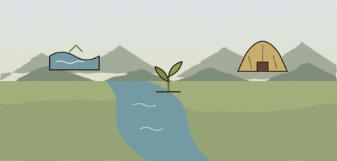
강가농경지움집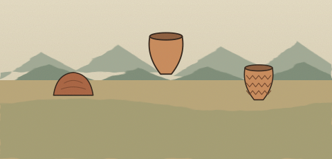
진흙뾰족한 바닥빗살무늬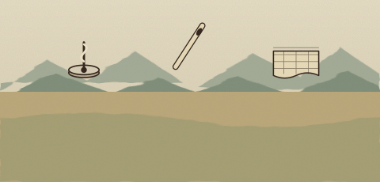
가락바퀴뼈바늘실과 옷감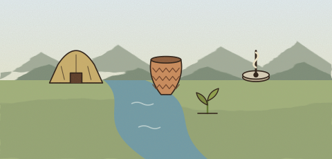
1단원 · 청동기 고인돌 축조자 regular_bronze_age
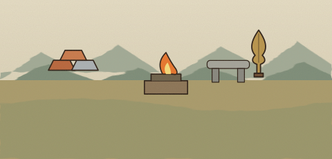
구리와 주석불과 거푸집귀한 청동벼농사의 발달빈부 격차군장 계급
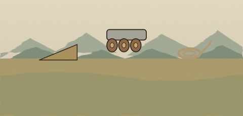
흙 경사로통나무 굴림대공동 노동1단원 · 단군왕검의 고조선 개국 regular_gojoseon
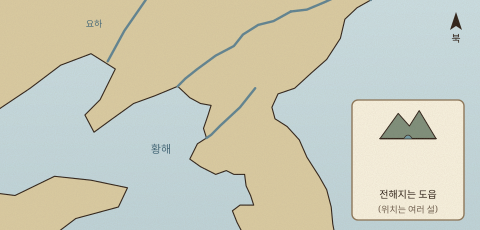
요동한반도 북부아사달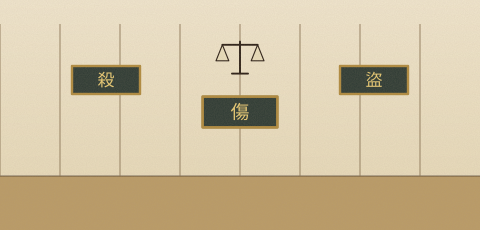
살인 조항상해 조항절도 조항비파형 동검고인돌청동기 문화권
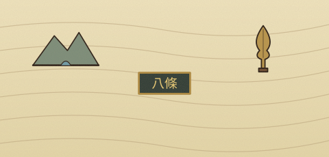
건국 전승8조법비파형 동검1단원 · 삼국의 전성기 한강 쟁탈전 regular_three_kingdoms
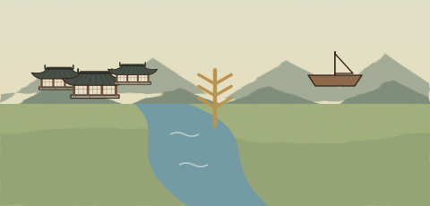
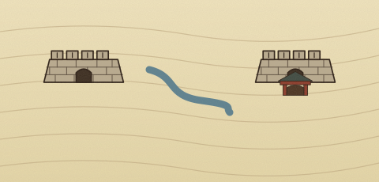
평양성한강 유역국내성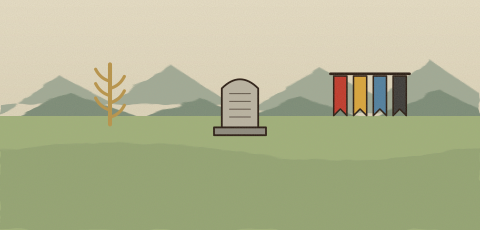
1단원 · 고분 벽화 탐정 regular_three_kingdoms_life
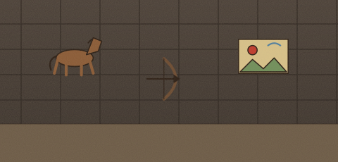
말을 탄 사냥몸을 뒤로 돌린 활쏘기고구려의 무예 기상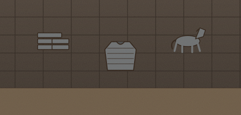
덩이쇠(철정)판갑옷말갑옷(마갑)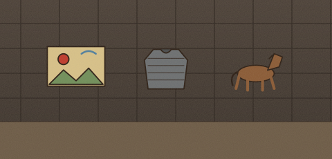
1단원 · 고려 건국기 regular_goryeo_founding
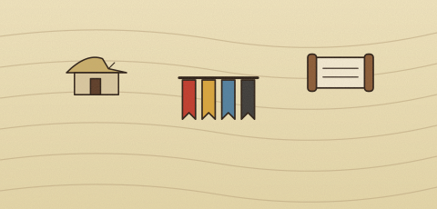
전쟁에 지친 백성흩어진 민심포용과 통합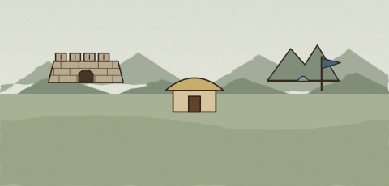
발해의 멸망발해 유민고구려 계승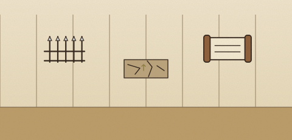
호족의 군사와 재산반란의 위험왕실의 든든한 편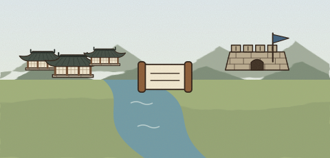
1단원 · 고려 사회 탐정 regular_goryeo_society
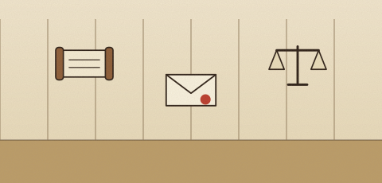
남매의 주장아버지의 유서고려의 상속법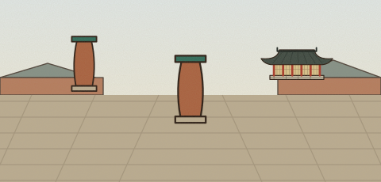
무량수전 기둥가운데가 불룩한 기둥곧고 안정적으로 보이는 착시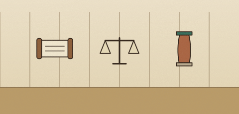
1단원 · 서희의 외교 담판과 강감찬의 귀주대첩 regular_goryeo_war
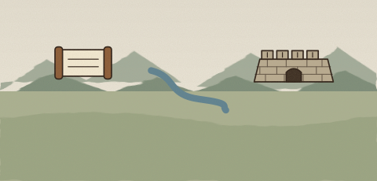
고구려 계승압록강 교통로강동 6주와 국경 조정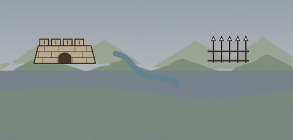
흥화진 방어 거점삼교천 지형병력 운영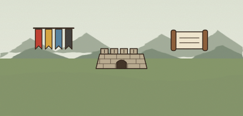
귀주 전투의 승리북방 방어전쟁 뒤 관계 조정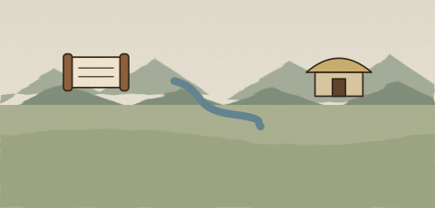
서희의 담판강동 6주귀주대첩 뒤 재건1단원 · 팔만대장경과 벽란도 regular_goryeo_culture
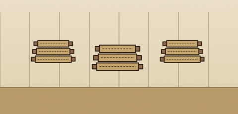
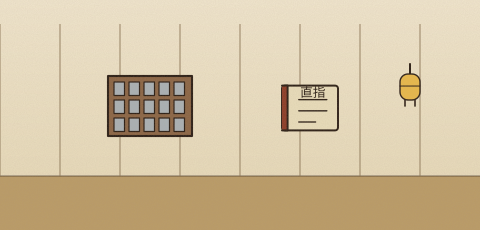
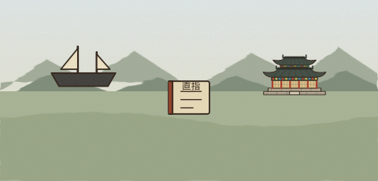
벽란도흥덕사해인사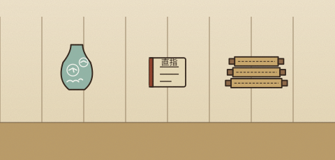
1단원 · 통일신라의 번영과 불국사의 과학 regular_silla
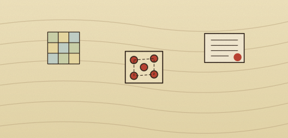
9주5소경왕권 강화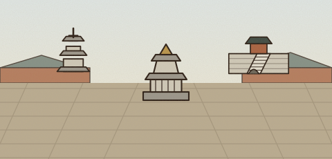
석가탑다보탑청운교·백운교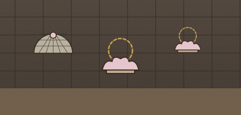
돔 쐐기돌불상 배치본존불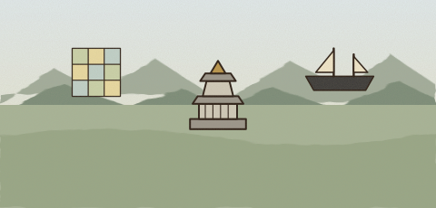
9주 5소경불국사·석굴암당과의 교류1단원 · 해동성국 발해 regular_balhae
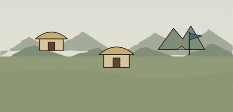
고구려 유민말갈 집단동모산의 새 나라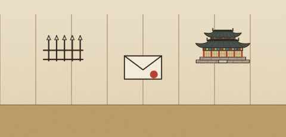
무왕 때 당과 대립문왕 때 제도와 교류선왕 때 해동성국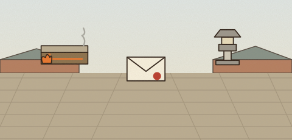
온돌과 기와일본에 보낸 국서여러 문화 요소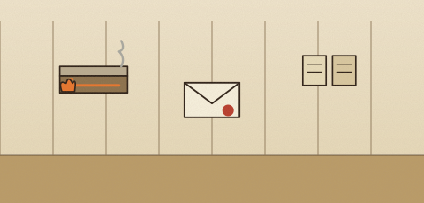
온돌·무덤일본에 보낸 국서주민 구성 기록2단원 · 한양 도읍 설계자 regular_joseon_founding
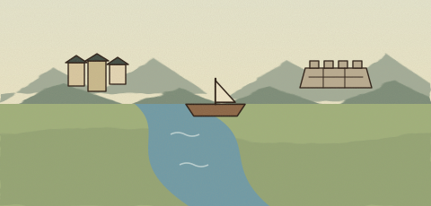
개경에서 새 도읍으로한강의 수운방어하기 좋은 지형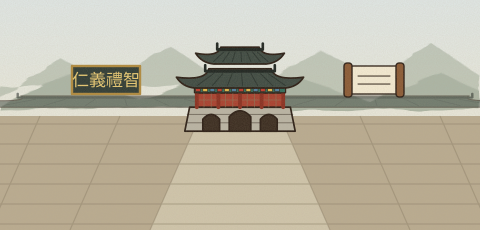
인의예지4대문 이름백성에게 전하는 도리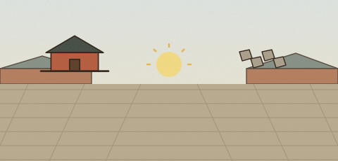
근정전 앞마당햇빛과 눈부심거친 화강암 박석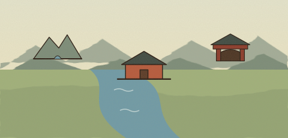
한강과 산도성과 궁궐성균관2단원 · 명량해전 regular_myeongnyang
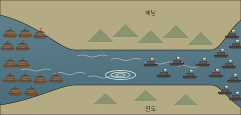
판옥선 13척일본 수군 대함대울돌목 협로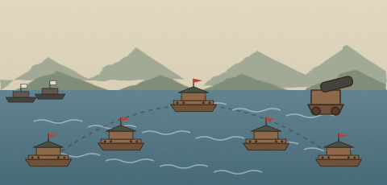
왜선의 백병전 전술튼튼한 판옥선화포2단원 · 조선 후기 보부상과 모내기 대박 regular_joseon_economy
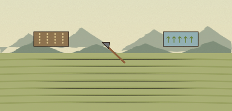
직파법김매기 노동모내기법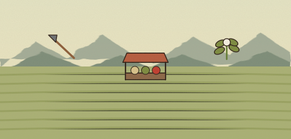
줄어든 김매기 일손가까운 장시상품 작물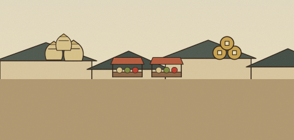
쌀과 보리의 잉여전국 장시상평통보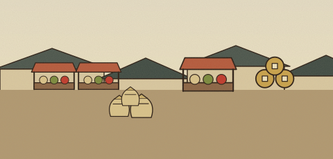
2단원 · 실학자 탐구 regular_joseon_silhak
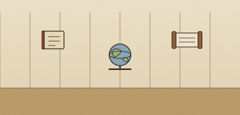
현실 문제 연구청과 서양의 지식학자마다 다른 주장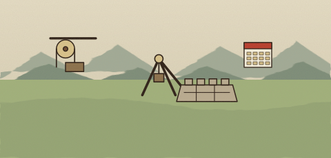
도르래의 원리백성에게 지급한 품삯단축된 공사 기간농촌의 어려움사람의 존엄인내천
2단원 · 세종대왕과 과학 발전 regular_sejong
발음 기관 모양하늘·땅·사람해례 자료
한양 관측 기준칠정산 계산농사와 절기
그림자 눈금12지신 그림종로의 공공 시계
훈민정음 해례칠정산앙부일구
2단원 · 조선 후기 서민 문화 regular_joseon_folk
김홍도의 풍속화그림 속 생활 모습자료가 보여 주는 범위
소리꾼고수관객
지역마다 다른 탈춤양반의 위선 풍자관객·장소·내용
김홍도 풍속화판소리탈춤
2단원 · 강화도 조약과 근대 문물의 도입 regular_modern_open
전차 노선전등도시 생활 변화
2단원 · 조선의 신분제 regular_joseon_status
양인과 천인양반·중인·상민·노비호패와 호적
의관과 의학역관의 교류동의보감
조세 부담군역과 소속지역·시기별 변화
양천제중인의 직역호적 기록
2단원 · 조선의 외교와 병자호란 regular_joseon_diplomacy
압록강두만강주민 이주
남한산성식량 부족백성 피해
대청 관계군비 정비피해 회복
국경 정책전란 기록회복 정책
3단원 · 8·15 광복의 환희와 대한민국 정부 수립 regular_gwangbok
1945년 8월 15일일본의 무조건 항복태극기
치안 유지식량 확보새 나라 준비
투표용지후보자 번호민주 선거의 원칙
3단원 · 3·1 만세 운동과 대한민국 임시정부 regular_independence
독립 의지여러 계층비폭력 시위
학생 참여지역 주민태극기·만세
임시헌장국민 주권민주공화제
독립선언서만세 시위 기록임시 헌장
3단원 · 6·25 전쟁의 상처와 평화 regular_korean_war
38선피난 방향부산
낙동강 전선학생 일기민간인 피난
인천판문점군사분계선
전쟁 지도사람들의 기록정전 자료
3단원 · 의병 항쟁과 안중근의 동양평화론 regular_independence_army
을사늑약다양한 참여여러 지역
대한독립 글씨참여자 이름유물의 흔적
대한의군침략 비판동양 평화
의병 기록단지동맹 태극기동양평화론
3단원 · 1910년대 무단 통치 regular_japanese_rule_1
헌병 경찰즉결 처벌일상 통제
토지 신고소유권 변화농민 부담
비밀 결사비밀 서약저항의 위험
헌병 경찰토지 조사 사업비밀 결사 기록
3단원 · 민족 말살 통치와 강제 동원 regular_japanese_rule_2
정책 문서이름 통제학교생활
동원 기록피해자 증언기억 활동
사전 원고맞춤법 통일언어생활
황국신민화 정책강제 동원 기록조선어학회 자료
3단원 · 6·25 전쟁 이후 달라진 사회 regular_post_war
전쟁 피해서로 돕기재건 조건
천막 교실배움 이어가기지역별 조건
이산가족 기록DMZ대화·교류
피난 생활 기록천막 교실이산가족 기록